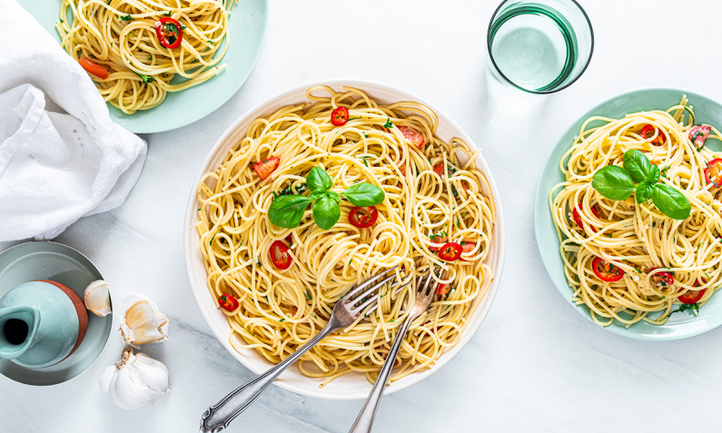
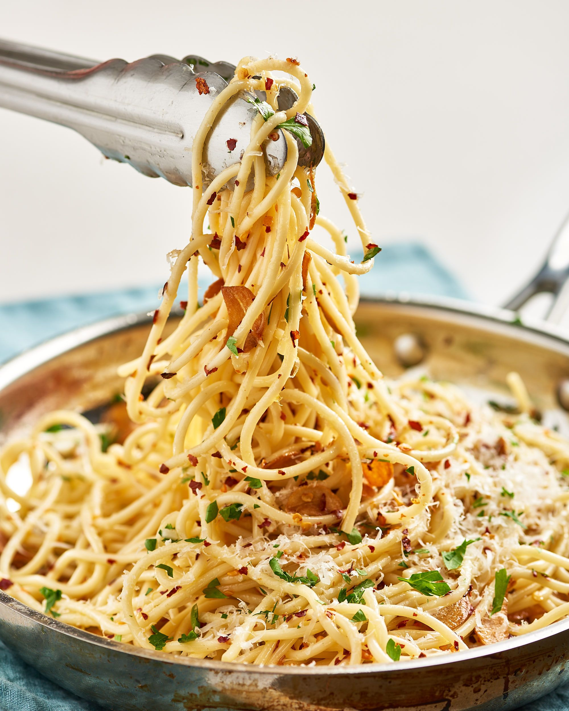

Spaghetti Aglio e Olio

Image Credit: Britta Meurer
Description
This is a classic Italian pasta dish that is easy to make in a pinch. "Aglio, Olio, e Peperoncino" translates to "garlic, oil, and pepper," and that's all it takes to make this hearty and delicious dish. This specific recipe comes from Italian Recipe Book
Ingredients
- 14 oz spaghetti
- 2-4 garlic cloves
- 6-8 sprigs of parsley
- 1/2-3/4 cup extra virgin olive oil
- 2 small red chili peppers
- Salt to taste

Image Credit: Soraya
Steps
- Bring a large pot of water to a boil.
- Once water is boiling add salt to taste and cook spaghetti ‘al dente’. While you’re waiting, start preparing the sauce.
- Peel garlic clove(s), split it in half and discard the green part that is in the middle. Chop the rest of the clove. If you’re using whole (fresh or dried) chili pepper, slice it lengthwise, remove the seeds and discard the stem. Chop peperoncino coarsely.
- Put oil, garlic and fresh peperoncino or dried chili flakes in a skillet pan, start heating over low heat. Let them fry for about two minutes then add a little bit of parsley.
- Once spaghetti are cooked, move them to the skillet along with a small ladle or so of pasta cooking water. Pasta should not float in the water, add just enough to let pasta absorb a little bit of it. Toss everything in the pan for a minute or so. Add the remaining chopped parsley and give it another nice toss before serving.

Image Credit: PNW Living